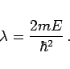

Inhalt Index DeskTop Bronstein

 Differentialgleichungen Partielle Differentialgleichungen Partielle Differentialgleichungen aus Naturwissenschaft und Technik Schrödinger-Gleichung
Differentialgleichungen Partielle Differentialgleichungen Partielle Differentialgleichungen aus Naturwissenschaft und Technik Schrödinger-Gleichung


Wenn das Potential U und die Wellenfunktion  nicht von der Zeit abhängen, d.h. , , dann genügt zur Beschreibung der Zustände die einfachere zeitunabhängige SCHRÖDINGER-Gleichung. Man kann sie aus der zeitabhängigen SCHRÖDINGER-Gleichung (9.109a) mit dem Ansatz (9.110b) herleiten und erhält
nicht von der Zeit abhängen, d.h. , , dann genügt zur Beschreibung der Zustände die einfachere zeitunabhängige SCHRÖDINGER-Gleichung. Man kann sie aus der zeitabhängigen SCHRÖDINGER-Gleichung (9.109a) mit dem Ansatz (9.110b) herleiten und erhält
| (9.111a) |
In diesem ebenfalls nichtrelativistischen Fall ist
| (9.111b) |
die Energie des Teilchens. Die Wellenfunktionen , die diese Differentialgleichung erfüllen, sind ihre Eigenfunktionen; sie existieren nur für bestimmte Energieeigenwerte  , die sich für das betrachtete Problem aus seinen spezifischen Anfangs- und Randbedingungen ergeben. Die Gesamtheit der Eigenwerte bildet das Energiespektrum der Teilchen. Wenn U eine monotone Funktion ist, die im Unendlichen verschwindet, dann bilden die Eigenwerte ein diskretes Spektrum.
, die sich für das betrachtete Problem aus seinen spezifischen Anfangs- und Randbedingungen ergeben. Die Gesamtheit der Eigenwerte bildet das Energiespektrum der Teilchen. Wenn U eine monotone Funktion ist, die im Unendlichen verschwindet, dann bilden die Eigenwerte ein diskretes Spektrum.
Ist das betrachtete Gebiet der gesamte Raum, dann kann als Randbedingung gefordert werden, daß  im LEBESGUEschen Sinne (s. auch Lit. 8.9) im gesamten Raum quadratisch integrabel sein muß. Ist das Gebiet endlich, z.B. eine Kugel oder ein Zylinder, dann kann als erste Randwertaufgabe z.B. für den Rand gefordert werden.
im LEBESGUEschen Sinne (s. auch Lit. 8.9) im gesamten Raum quadratisch integrabel sein muß. Ist das Gebiet endlich, z.B. eine Kugel oder ein Zylinder, dann kann als erste Randwertaufgabe z.B. für den Rand gefordert werden.
In dem speziellen Fall U(x) = 0 ergibt sich die HELMHOLTZsche Differentialgleichung
mit dem Eigenwert
|  | (9.112b) |
Als Randbedingung wird hier oft am Rande gefordert. In einem endlichen Gebiet stellt (9.112a) die mathematische Ausgangsgleichung für akustische Schwingungen in gegebenen räumlichen Begrenzungen dar.